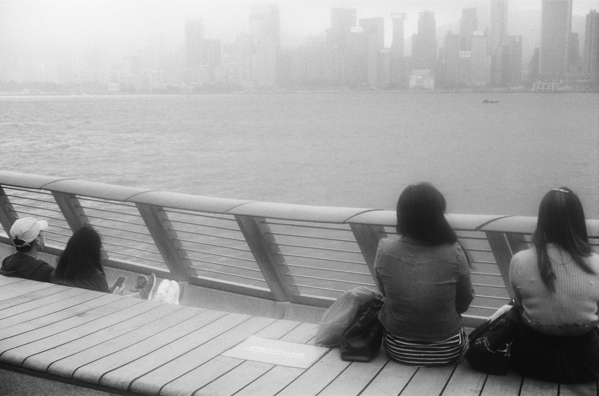
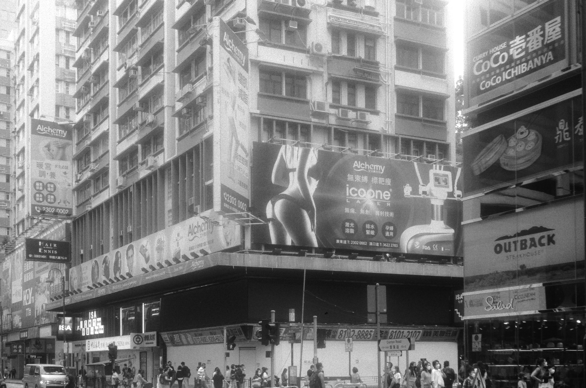
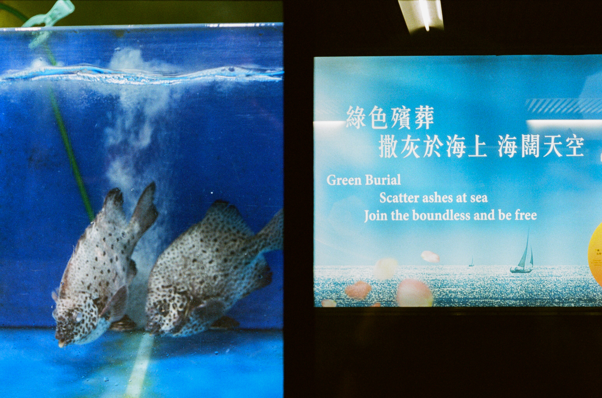
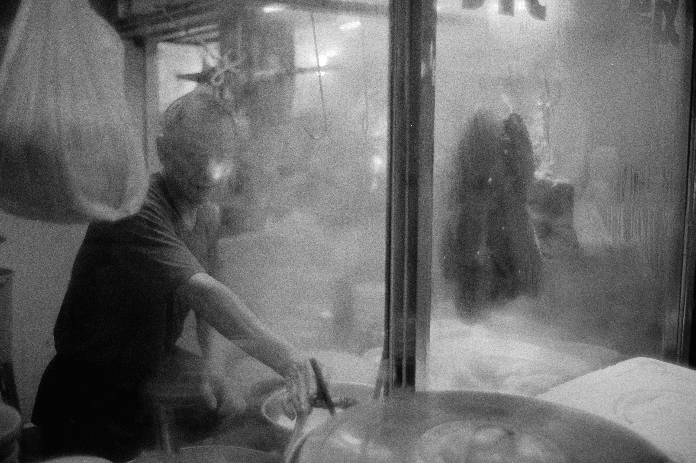
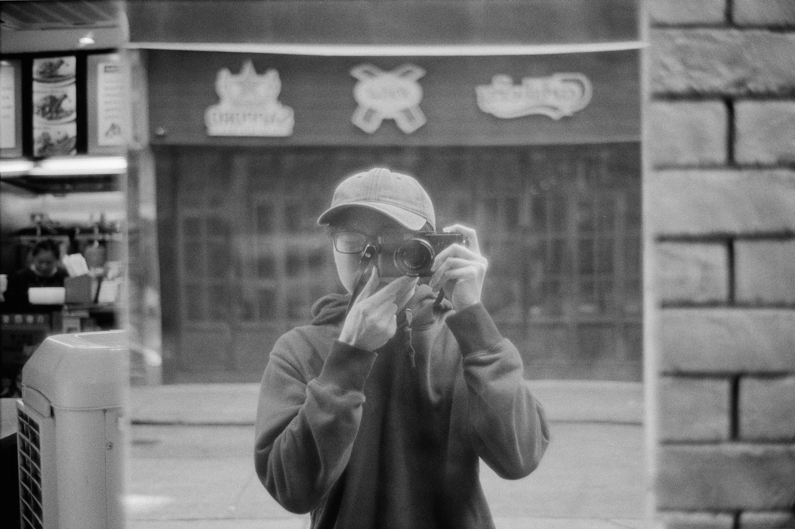
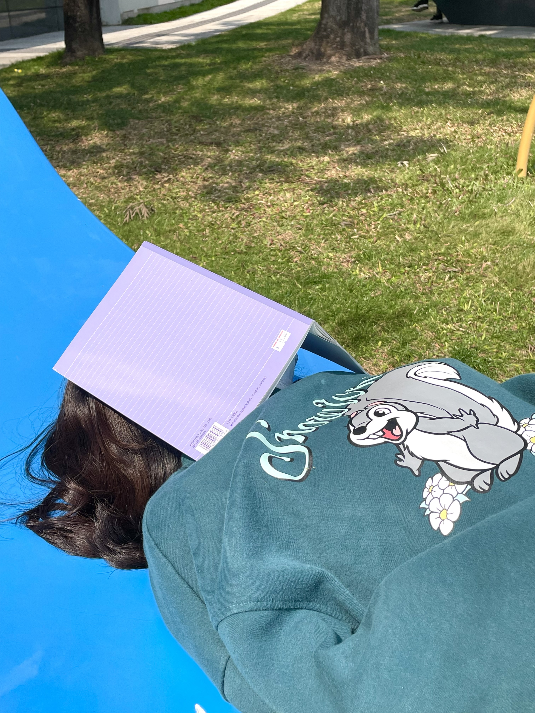
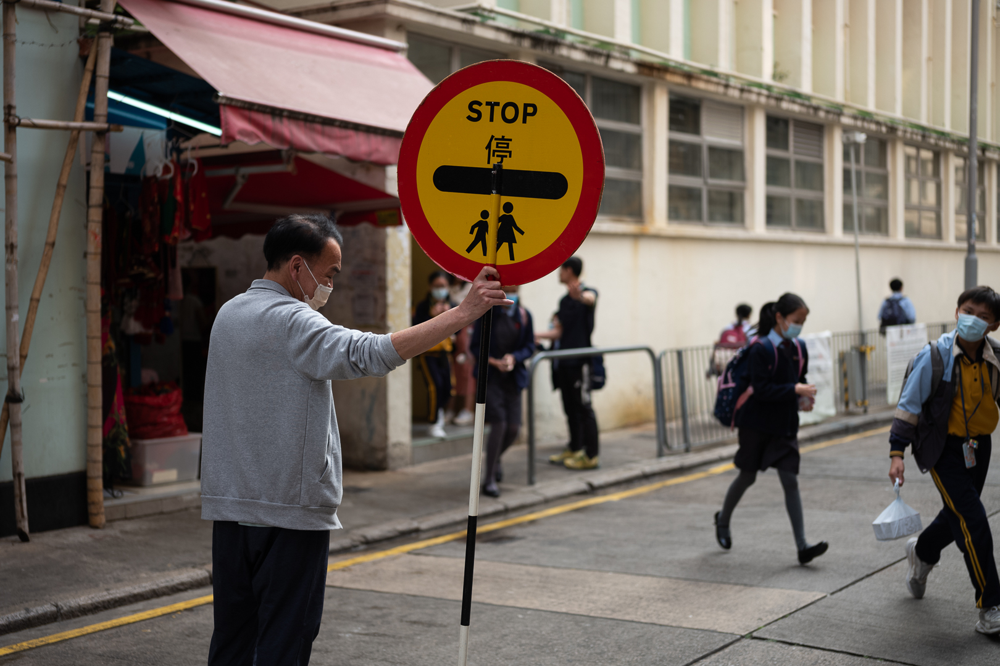

大舞台 の一歩
所有作品系列
这一页只认 `photos/da-butai/`。你把选好的照片放进去，按 `photo-01.jpg`、`photo-02.jpg` 这类名字保存即可。









大舞台 の一歩
这一页只认 `photos/da-butai/`。你把选好的照片放进去，按 `photo-01.jpg`、`photo-02.jpg` 这类名字保存即可。






